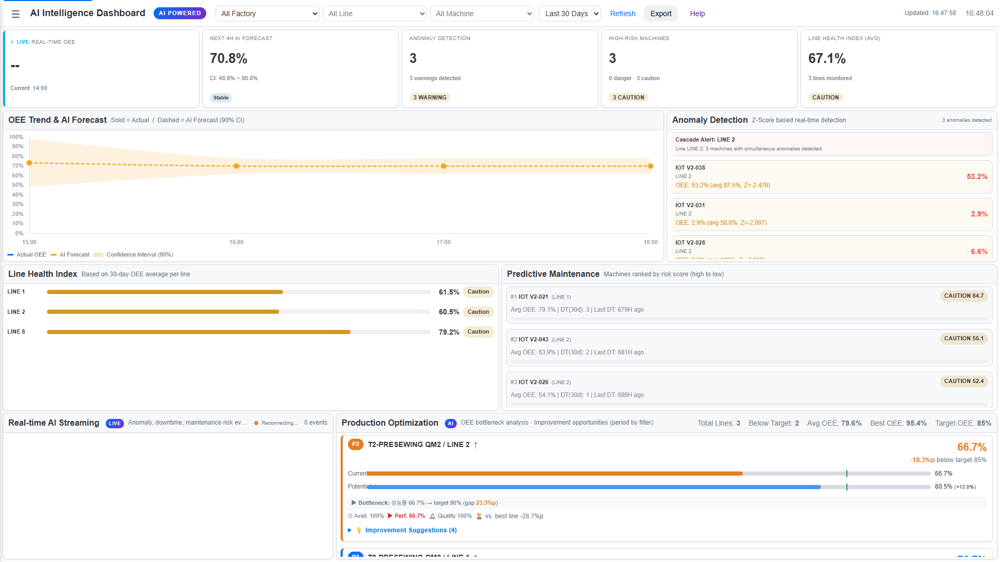
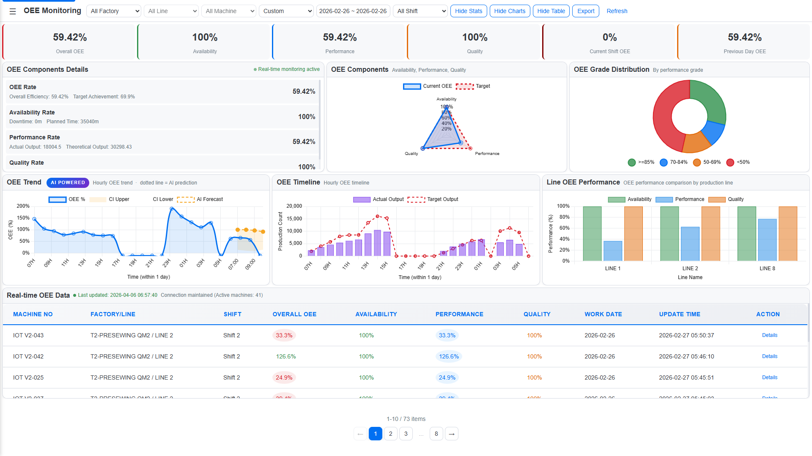
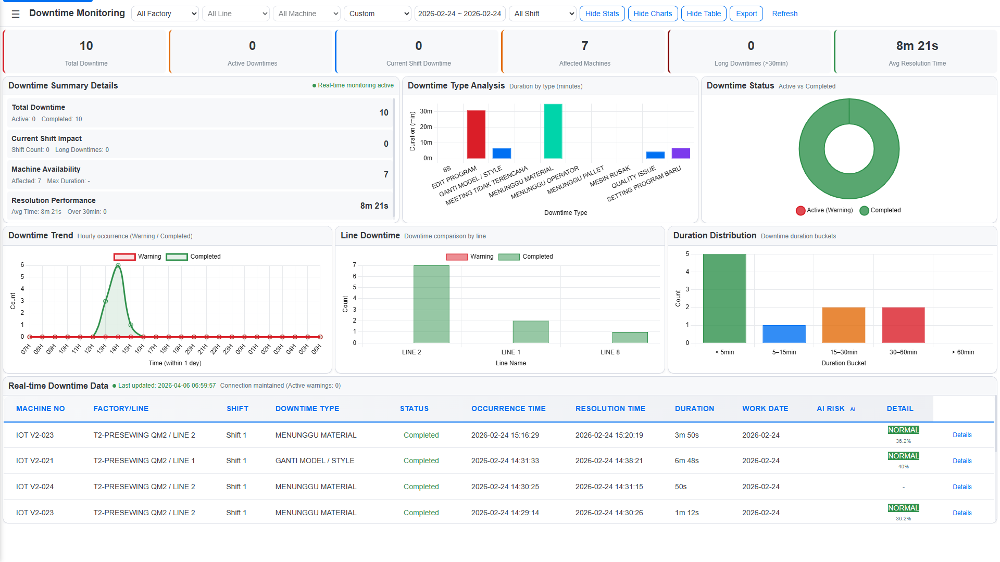
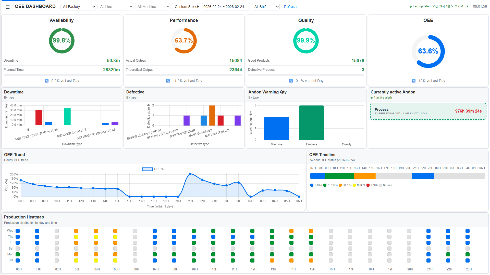
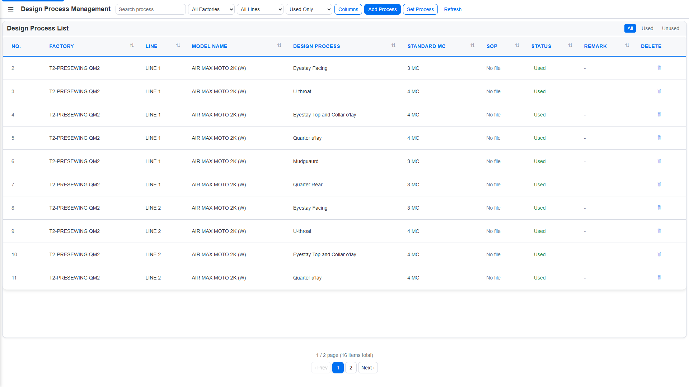

AI 도입 계획 수립부터 구현까지의 전 과정을 담은 통합 보고서입니다.
OEE SCI V1은 안정적인 실시간 모니터링을 제공했지만, 이름만 "AI OEE Dashboard"였을 뿐 실질적인 AI 기능이 전혀
없었습니다.
사전 대응이 불가능한 수동 분석 구조의 한계를 극복하기 위해 V2를 기획하였습니다.
문제가 발생한 후에야 확인 가능. OEE 저하 원인 분석이 수동. 이상 발생 시 즉각 대응 불가.
인도네시아 SCI. 컴퓨터 패턴재봉기 대상. SSE 기반 실시간 데이터 수신 구조 기존 유지.
실제 동작하는 AI 기능을 탑재하여, 문제 발생 전 예측·감지·최적화가 가능한 시스템으로 진화. 컴퓨터 자수기 확장.
V1 기능 완전 유지. 외부 AI API 없이 자체 통계 엔진으로 구현. 1920×1080 사이니지 최적화.
V2 설계의 기준이 된 V1 시스템의 구성 요소와 기술 스택입니다.
인도네시아 SCI 컴퓨터 패턴재봉기의 실시간 OEE 수신 및 모니터링
Server-Sent Events (SSE) 기반 5초 폴링. 장비 → REST API → MySQL 실시간 데이터 수신
가용성 × 성능 × 품질 자동 계산. 시간대별 / 교대조별 집계 및 이력 보관
Andon · Downtime · Defective 3종 이벤트 발생/완료 처리 및 대시보드 실시간 표시
| 항목 | V1 내용 |
|---|---|
| 기술 스택 | PHP 7.4+ · MySQL 5.7+ · jQuery 3.6.1 · Chart.js · Server-Sent Events |
| UI 프레임워크 | SAP Fiori Horizon Light (상단 Nav Bar 포함) |
| 핵심 데이터 테이블 | data_oee · data_oee_rows_hourly · Downtime · Defective · Andon |
| 계층 구조 | Factory → Line → Machine |
| SSE 쿼리 수 | 사이클당 최대 7회 (중복 집계 포함) |
| V1 AI 기능 | 없음 — 이름만 "AI OEE CS Dashboard" |
| 페이지 레이아웃 | 스크롤 기반, Footer 포함, 사이니지 비최적화 |
외부 AI API 없이 자체 통계 엔진으로 구현한 5가지 AI 방향성입니다.
과거 30일 시간대별 OEE 패턴을 학습하여 다음 4~8시간 OEE를 예측. 사전 대응 가능.
Z-Score 기반 실시간 이상 감지. 평균 ±2σ 이탈 또는 연쇄 이상 발생 시 즉시 감지.
규칙 기반 AI 자동 보고서 생성. 경영진용 OEE 요약 · 이상감지 · 정비위험 · 최적화 내용을 자연어로 자동 작성.
SSE 기반 실시간 AI 분석 스트림. 데이터 입수와 동시에 AI 인사이트를 슬라이드인 카드 피드로 표시.
라인별 Availability · Performance · Quality 병목을 식별하고 P1/P2/P3 개선 제안 자동 산출.
1920×1080 전광판 전용 AI 대시보드. 60초 자동 새로고침, 공장→라인→기계 필터 연계.
V1의 안정적인 OEE 모니터링 기능을 완전히 유지하면서 AI 분석 엔진과 풀스크린 사이니지 UI를 전면 추가했습니다.
지수평활법, Z-Score, 선형회귀 등 통계 알고리즘 기반 AI 분석 엔진 구현. OEE 예측·이상감지·예방정비 위험도 API 구현.
기존 OEE/다운타임/불량 페이지에 AI 예측선, AI Risk 열, 품질 파수꾼 섹션 추가. 기존 화면 흐름 유지한 채 AI 인사이트 삽입.
SSE 실시간 AI 스트리밍 피드 + 생산 최적화 제안(P1/P2/P3 병목 우선순위) 구현. 사이니지 전용 AI Dashboard (ai_dashboard_2.php) 구현.
SSE 스트림 N+1 쿼리 제거, 공통 라이브러리 통합(~350줄 중복 제거), 타임존 중앙화(27개→1곳), 해시 버그 수정.
5개 버그(OEE 111% 이상값, CI 범위 오류, date_range 무시, 신뢰구간 역전, AI 피드 중복) 전체 수정.
1920×1080 사이니지 최적화 레이아웃으로 전 페이지 리디자인. 햄버거 드로어 네비게이션, JS translateX 컬럼 고정 테이블 구현.
① 개발내용 보고 ② 자수기 IoT 계획 보고 ③ 자수기 IoT 데이터 모니터링 방법(dashboard, as_dashboard 등) 협의
※ 요청사항: SCI 서버 외부접속 허용
① IoT 디바이스 펌웨어(BLACK_CPU 버전) 업그레이드 ② 서버 프로그램 업로드 및 세팅
OEE SCI V2 전체 기능 현장 테스트
자수기 IoT 디바이스 현장 연동 테스트
NIKE 대상 OEE SCI V2 공식 시연
V1의 모든 기능은 V2에서 그대로 유지되며, 아래 항목들이 신규·개선되었습니다.
| 영역 | V1 (기존) | V2 (업그레이드) |
|---|---|---|
| AI 분석 | 없음 (이름만 "AI CS Dashboard") | OEE 예측·이상감지·예방정비·품질파수꾼·생산최적화NEW |
| AI Dashboard | 없음 | AI Intelligence Dashboard (ai_dashboard_2.php)NEW 예측차트·이상감지·정비위험·건강지수·최적화 통합, 60초 자동갱신 |
| 사이니지 대시보드 | 일반 웹 레이아웃 (nav bar 포함) | 1920×1080 풀스크린 사이니지 전용NEW |
| 네비게이션 | 상단 SAP Fiori 네비게이션 바 | 햄버거 슬라이드 드로어 (좌측 240px 오버레이)NEW nav-drawer-manage.php 공통 include로 일괄 관리 |
| OEE 모니터링 | 실시간 SSE 스트리밍 테이블·차트 | 기존 기능 유지 + AI 예측선 오버레이IMPROVED "AI POWERED" 뱃지, 점선=AI 예측 구간, 신뢰구간 음영 |
| 다운타임 | 테이블 + 상태 관리 | AI Risk 열 추가IMPROVED DANGER / CAUTION / NORMAL 위험도 뱃지, MutationObserver 실시간 업데이트 |
| 불량 관리 | 발생 현황 테이블 | AI 품질 파수꾼 섹션 추가IMPROVED 파레토 분석, 24시간 히트맵, 머신 위험 랭킹, Pearson 상관계수 |
| 실시간 알림 | 없음 | AI 실시간 스트리밍 피드NEW SSE 기반, 슬라이드인 카드, 15초 자동갱신, 최대 15건 피드 |
| 보고서 | 엑셀 내보내기 | AI 자동 리포트 엔진NEW 자연어 인사이트 6종 자동 생성, HTML Export → PDF 변환 가능 |
| 페이지 레이아웃 | 스크롤 레이아웃 (Footer 포함) | 1920×1080 풀스크린 CSS GridIMPROVED Stats/차트/테이블 행 토글, ResizeObserver 자동 재계산 |
| 컬럼 고정 | 없음 | JS translateX 기반 컬럼 고정NEW Chromium sticky 버그 → JS 방식으로 완전 해결. |
| SSE 성능 | 사이클당 최대 7회 쿼리 | 4회로 통합IMPROVED 중복 집계 쿼리 병합, 해시 버그 수정으로 불필요한 전송 제거 |
| 코드 구조 | stream 파일마다 공통 함수 복사 | stream_helper.lib.php 공통 라이브러리IMPROVED 중복 코드 약 350줄 제거, statistics.lib.php AI 통계 함수 분리 |
자체 구현한 통계 엔진(지수평활법, Z-Score, 선형회귀, Pearson 상관)으로 실시간 AI 분석을 제공합니다. 외부 AI API를 사용하지 않습니다.
5개 AI 분석 섹션을 하나의 화면에 통합한 전용 대시보드입니다. 60초마다 자동 갱신되며, 공장→라인→기계 연계 필터와 날짜 범위 선택을 지원합니다. 1920×1080 사이니지 최적화 레이아웃입니다.

과거 30일 시간대별 OEE 패턴을 학습하여 다음 4~8시간 OEE를 예측합니다. 90% 신뢰구간(상한/하한)과 트렌드 방향 뱃지를 함께 표시합니다.
지수평활법 + 요일×시간 계절성머신별 OEE·가용성·품질 지표를 실시간 모니터링합니다. 평균 ±2σ를 벗어나거나 동일 라인에서 연쇄 이상이 발생하면 즉시 감지합니다.
Z-Score + 연쇄 이상 감지런타임(40%) + 다운타임 빈도 증가율(35%) + OEE 불안정도(25%)를 가중 합산해 정비 위험 스코어(0~100)를 계산합니다.
가중 스코어링 (3요소 합산)불량 유형 파레토 분석(80% 룰), 24시간 발생 히트맵, 머신별 위험 랭킹, OEE 피어슨 상관계수를 자동 산출합니다.
파레토 + 히트맵 + PearsonSSE 기반으로 OEE 이상·신규 다운타임·정비 위험 이벤트를 15초 주기로 스트리밍합니다. 최대 15건 슬라이드인 카드 피드로 표시됩니다.
SSE + 5분 세션 + 자동 재연결라인별 Availability·Performance·Quality 병목 컴포넌트를 식별하고, 잠재 OEE 향상 추정치와 P1/P2/P3 개선 제안 4건을 자동 생성합니다.
병목 분석 + 잠재 OEE 추정기존 data_oee.php의 OEE 트렌드 차트 상단에 AI 예측선과 신뢰구간을 오버레이합니다. 화면 구조 변경 없이 "AI POWERED" 뱃지와 점선 예측 구간이 삽입됩니다.

기존 다운타임 목록 테이블에 "AI Risk" 열이 자동 추가됩니다. MutationObserver로 테이블 데이터 변화를 감지하여 위험도 뱃지를 실시간으로 업데이트합니다.

규칙 기반으로 경영자용 분석 리포트를 자동 생성합니다. 선택한 날짜 범위의 OEE 요약·이상감지·정비위험·최적화 내용을 자연어 인사이트 6종으로 정리하고, HTML 파일로 다운로드할 수 있습니다.
현장 대형 모니터(사이니지)에 최적화된 풀스크린 레이아웃으로 전 페이지를 리디자인했습니다. 기존 V1 페이지는 그대로 유지됩니다.
1920×1080 해상도에 꽉 맞는 4행 CSS Grid 레이아웃. 상단 nav 바를 제거하고 52px 슬림 헤더만 남겨 콘텐츠 영역을 최대화했습니다.

OEE·안돈·다운타임·불량·OEE 로그 페이지를 동일한 Row Grid 구조로 리디자인했습니다. Stats·차트·테이블 행을 토글 버튼으로 숨기거나 표시할 수 있으며, 레이아웃이 자동으로 재계산됩니다.
공장·라인·기계·모델·공정·안돈·다운타임·불량·색상·근무시간 등 전체 마스터 관리 페이지를 풀스크린 구조로 리디자인했습니다.

컬럼이 많은 테이블(log_oee_row_2 등)에서 MACHINE_NO 열을 가로 스크롤 중에도 고정합니다. CSS position:sticky가 Chromium에서 동작하지 않는 문제를 JS translateX 방식으로 완전 해결했습니다.
코드 레벨 최적화로 SSE 실시간 스트리밍 응답 속도와 서버 부하를 대폭 개선했습니다.
다운타임·안돈·불량 type stats 조회를 2쿼리+PHP 병합 → 단일 LEFT JOIN 쿼리로 통합했습니다.
info_* LEFT JOIN data_*9개 stream 파일의 공통 함수를 stream_helper.lib.php로 통합해 약 350줄 중복 제거했습니다.
stream_helper.lib.php27개 파일에 중복 선언됐던 타임존 설정을 lib/db.php 단 1곳으로 통합했습니다.
lib/db.php 1곳 관리64KB 버퍼로 인한 SSE HTTP 500 오류를 FcgidOutputBufferSize 0 설정으로 근본 해결했습니다.
FcgidOutputBufferSize 0V1의 기술 스택을 유지하면서 AI 관련 항목이 추가되었습니다.
OEE SCI V2 구현과 함께 현장 IoT 디바이스 펌웨어도 업그레이드되었습니다. PSoC 4 (Cortex-M0) 기반 CTP280 보드에서 재봉기·자수기 생산 데이터를 수집하여 REST API로 전송합니다.
V1 통합 펌웨어에서 PATTERN_MACHINE 전용으로 분리한 BLACK CPU 보드 버전입니다. SEWING_MACHINE(TrimPin ISR)과 전류센서(ADC_SAR_Seq)를 완전 제거하여 코드를 단순화하고, Flash 사용량을 V1 대비 약 5% 절감했습니다.
| 항목 | V1 통합 | BLACK_CPU V1 |
|---|---|---|
| PATTERN_MACHINE | 지원 | 고정 (유일 타입) |
| SEWING_MACHINE (TrimPin ISR) | 지원 | 제거 |
| 전류센서 (ADC_SAR_Seq) | 지원 (옵션) | 제거 |
| Firmware Version | Integrated REV 9.8.3 | BLACK_CPU V1 |
| Flash 사용 | ~131,800 bytes (50.3%) | 118,804 bytes (45.3%) ↓ |
BLACK_CPU V1 기반으로 컴퓨터 자수기(Computer Embroidery Machine) 전용으로 분리한 버전입니다. UART 프로토콜을 JSON에서 세미콜론 구분 텍스트 방식으로 전면 교체하고, 실끊김(Thread Breakage) 추적과 자수기 전용 서버 API를 추가했습니다.
| 항목 | BLACK_CPU V1 | EMBROIDERY_S V1 |
|---|---|---|
| UART 프로토콜 | JSON {"cmd":"count",...} | 세미콜론 구분 텍스트 |
| 파서 | jsmn 라이브러리 | 직접 구현 (uartJson.c 전면 교체) NEW |
| 실끊김 추적 | 없음 | embThreadBreakageQty/SumH/SumL NEW |
| WebAPI | send_pCount | send_eCount → data_embroidery NEW |
| Firmware Version | BLACK_CPU V1 | EMBROIDERY_S V1 |
V2에서 신규 구현된 파일 전체 목록입니다. 기존 V1 파일은 변경 없이 유지됩니다.